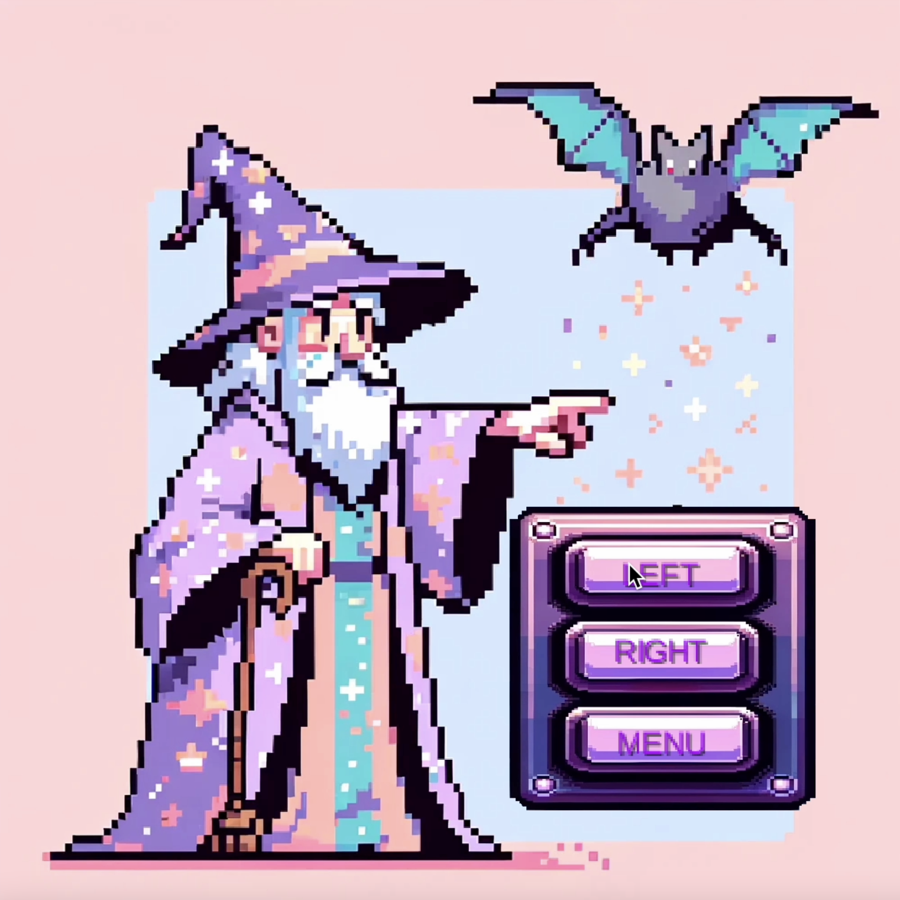
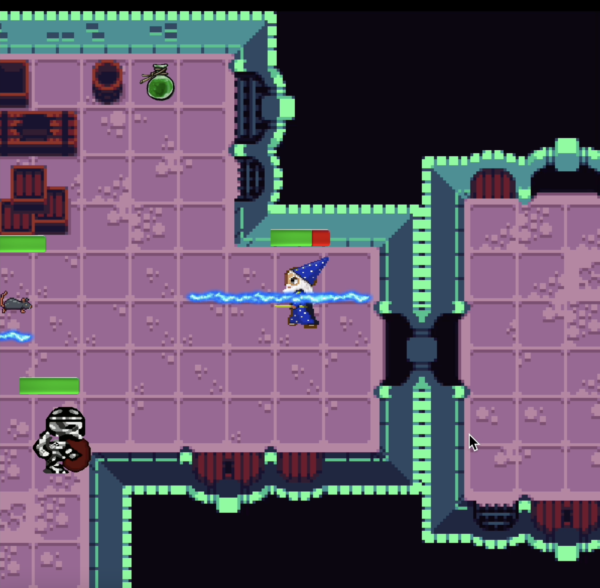
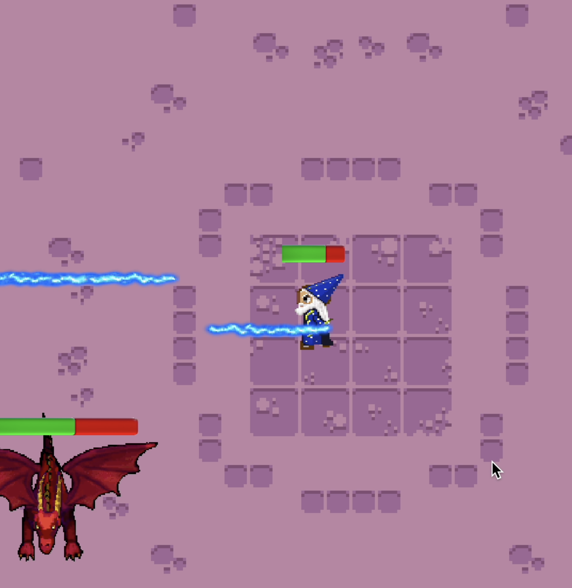

Spillet følger Gerald, en trollmann som har mistet en viktig bok! Onde skapninger har infiltrert slottet og ønsker å bruke boken for ondskap. Gerald må finne boken!
Spillet er et «dungeon-crawler»-spill, hvor spilleren må ta seg gjennom ulike nivåer med fiender og finne veien til dører for å komme deg videre til neste nivå.
Før du starter spillet er det greit å sjekke ut settings dersom du ønsker å bruke WASD heller enn piltastene.
Ved start er det en intro med bakgrunnshistorie, etterfulgt av en liten tutorial. Du lærer her hvordan du går, og hvordan du forsvarer deg mot fiendene på veien. Helt på slutten ankommer du til et «boss-level», hvor du må bekjempe den siste fienden i håp om å finne boken. Dersom du klarer å finne boken kommer du videre til credits.
 De viktigste erfaringene som jeg har gjort meg ved å jobbe i et team er hvor viktig det er med å ha fokus på testing under utvikling, betydningen av et møte, og et tydelig skille av arbeidsoppgaver.
Test-Driven-Development (TDD) eller eXtreme Programming (XP) ville kanskje vært ideelle i forhold til å kunne vite at funksjonaliteten er som den skal. Selv brukte vi en blanding mellom Scrum, Kanban og XP, og fått erfaringer med sprinter, regelmessige møter, Kanban-tavle, og parprogrammering.
Kommunikasjon er en essensiell del av utviklingen av programvaren. En ting å være obs på er at det kan bli enkelt å tro at dette kun handler om koding, men samarbeide best mulig sammen. Ikke alt er om det statiske på skjermen, men også menneskene som skal lage det.
Et bra sted å finne veier videre fra forskjellene, løse konflikter eller utføre generelle oppgaver som å fordele oppgaver er et møte. Et møte er den beste plassen for kommunikasjon. Ikke bare gjør et møte at det blir enklere å strukturere tid utover dagen (slik at man ikke svarer på spørsmål om kode til 10 om kvelden), men det utgjør deg også som en super plass for kommunikasjon angående forvirring som angår flere i teamet enten dette er om prosjektet, samarbeid eller annet. Å møtes en gang i uken er bra, men 2-3 ganger er mye bedre.
En god egenskap å kunne tilegne seg som en gruppe må være å kunne "designe en oppgave slik at omfanget er greit for en frist dere har satt sammen". Det et viktig å kunne definere hvilke oppgaver/klasser/funksjoner som er viktigst å starte med der man er i utviklingen, lage et tydelig skille mellom oppgavene og en tidsfrist som virker fornuftig i forhold til omfanget. Det gjør seg ikke å starte med funksjoner til objekter som ikke enda er laget. Da man fordeler oppgavene er det også viktig å kunne ha et tydelig skille, slik at to eller flere personer ikke ender opp med å arbeide med samme tingen. Dersom det for eksempel er en oppgave å lage en trollmann og å lage ulike booster-brygg som skal plukkes opp av trollmannen: hvem skal ta for seg funksjonene for at brygget blir plukket opp? Skal dette ventes med og være en samarbeidsoppgave? Er dette noe trollmann- eller bryggansvarlig skal ta seg av? Husk å være enige. Det hjelper å kartlegge alle funksjonene som et objekt skal ha, og deretter finne slike dilemmaer for å løse disse. Ikke bare sparer dette tid når man først skal sitte seg ned og utvikle funksjonene, men det sparer også tiden "mistet" da flere har jobbet på samme oppgave. Istedenfor at tiden en utvikler brukte på kode som ikke ble brukt, er denne tiden disponibel for å hjelpe med andre ting.
Til slutt er det viktig å ha det gøy!!